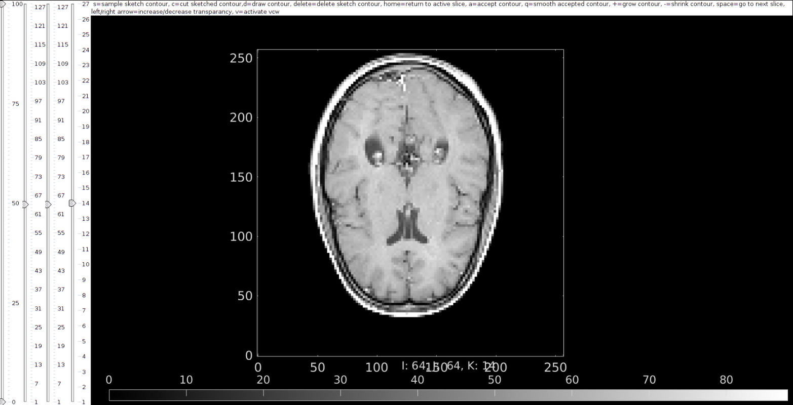

imx
Below is a demonstration of the features of the imx function
Contents
clear; close all; clc;
Syntax
hf=imx(varargin);
Description
The imx function provides a figure window based GUI for 3D image segmentation
Examples
Example: Segmenting MRI data
Get a 3D image (see als0 dcmFolder2MATobject to import DICOM data)
testCase=2; switch testCase case 1 %MATLAB brain data load mri; M=squeeze(D); %example image data set v=2./[1,1,.4]; %example voxel size case 2 %MRI imported from DICOM files, see also HELP_dcmFolder2MATobject defaultFolder = fileparts(fileparts(mfilename('fullpath'))); %Set main folder pathName=fullfile(defaultFolder,'data','DICOM','KNEE_UTE'); loadName=fullfile(pathName,'IMDAT','IMDAT.mat'); IMDAT_struct=load(loadName); %The image data structure G = IMDAT_struct.G; %Geometric/spatial information v=G.v; %The voxel size M= IMDAT_struct.type_1; %The image data end
Start segmentation using imx
hf=imx(M,v);

GIBBON www.gibboncode.org
Kevin Mattheus Moerman, gibbon.toolbox@gmail.com